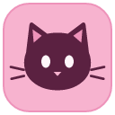
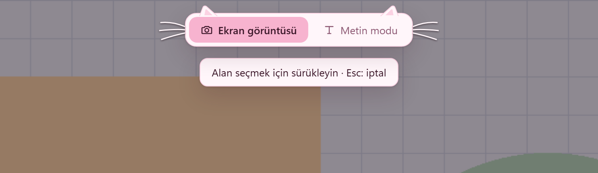

Yakala, üstüne çiz
Dikdörtgen, ok, kalem, fosforlu kalem, metin ve bulanıklaştırma. Çizimler kopyaladığın, kaydettiğin ve kuyruğa eklediğin görüntüye tam çözünürlükte işlenir.

Catail İndirWindows 10 ve 11 için, ücretsiz
ChatGPT'ye, WhatsApp'a ya da bir belgeye on görsel mi atacaksın? Pencereler arasında gidip gelme. Catail aldığın görüntüleri ve kopyaladığın metinleri sırayla tutar, sonra hepsini aynı sırayla bırakır.
Yönetici izni istemez. Telemetri yok. Windows uyarısı çıkarsa
Catail bir Windows uygulaması. Kurmak için bu sayfayı bilgisayarından aç.
Yapıştırılanlar buraya düşer.
Deneme alanı: düğmelere bas ya da klavyede Ctrl+V'ye dokun.
PrtSc ile alanı seç, kuyruğa ekle. Metin modundaysan her Ctrl+C de sıraya girer.
Rozete tıkla, kuyruk açılsın. Kartları sürükleyerek yerini değiştir, istemediğini sil.
Kuyruk doluyken Ctrl+V hepsini aldığın sırayla yapıştırır. Panonda ne varsa sonra yerine döner.
Dikdörtgen, ok, kalem, fosforlu kalem, metin ve bulanıklaştırma. Çizimler kopyaladığın, kaydettiğin ve kuyruğa eklediğin görüntüye tam çözünürlükte işlenir.
Yanlış yere mi yapıştırdın? Kutudaki kedi 10 saniye bekler, Geri al'a basınca kuyruk aynen döner.
Açıkken her Ctrl+C sıraya girer. Şifre yöneticilerinin kopyaladıkları alınmaz.
Windows'un kendi OCR motoruyla, internetsiz, Türkçe dahil. Çıkan metni düzenle, kopyala ya da kuyruğa ekle.
Seçim ekranı açılınca ekrandaki kodlar cihazda okunur. Alan adı kalın yazılır, sahte adres göze batar.
Telemetri yok, hesap yok. İnternete çıkan iki şey var: yeni sürüm denetimi ve yalnızca Çevir'e bastığında Google Çeviri'ye giden metin.
Toplu ya da tek tek yapıştırma. Toplu görseli sevmeyen uygulamalar için kural yazılabilir.
Kuyruğu olduğu gibi kaydet: görseller PNG, metinler TXT, her şey sırayla numaralı.
Hepsini değiştirebilirsin. Win+Shift+S'yi bile devralır.
Türkçe English Deutsch Français Español Italiano Português Nederlands Polski Русский Українська العربية 日本語 简体中文 한국어 Bahasa Indonesia


Uygulamanın rengi, pati imleçleri ve kutuda bekleyen kedi seçtiğine göre değişir. Siyah kedi koyu temadır. Kedi istemeyene düz bir Normal tema da var. Bu sayfa da kedine uyuyor, dene.
Kedi seçimi sıradaki sürümle geliyor. Şimdilik uygulamada turuncu kedi var.
Catail'in kodunun tamamı GitHub'da. Ne yaptığını okuyabilir, kendin derleyebilir, hata bildirebilir ya da fikir verebilirsin. Tauri 2 ile yazıldı: çekirdeği Rust, arayüzü React ve TypeScript.
Lisans dosyası yakında ekleniyor.
# Node.js 20+, Rust ve Windows 10/11 gerekir
git clone https://github.com/umutugrasan/catail
cd catail
npm install
npm run tauri devKurulum dosyası henüz kod imzalı değil, çünkü imza sertifikası almadık. Bu yüzden Windows SmartScreen "bilinmeyen yayımcı" diyebilir. Devam etmek istersen:
İçine sinmezse kodu okuyup kendin derleyebilirsin.
Windows 11 bu tuşu varsayılan olarak Ekran Alıntısı Aracı'na verir. Ayarlar → Erişilebilirlik → Klavye'den "Ekran alıntısı aracını açmak için Print Screen tuşunu kullan"ı kapatıp Catail'i yeniden başlat. Lightshot gibi bu tuşu kullanan başka bir araç açıksa kısayollar çakışır. İstersen kısayolu Ayarlar'dan değiştir.
Hayır. Catail Ctrl+V'yi yalnızca kuyrukta bir şey varken devralır. Kuyruk boşalınca Ctrl+C ve Ctrl+V eskisi gibi çalışır.
Hiçbir yere. Kuyruktaki görseller bilgisayarının geçici klasöründe durur ve uygulama kapanınca silinir. Çeviri kullanırsan metin yalnızca Çevir'e bastığında Google Çeviri'ye gönderilir.
Hayır. İndirmek ve kullanmak ücretsiz, hesap da istemez.
Şimdilik yalnızca Windows. macOS ileride planlanıyor, Linux planda yok.
Catail onun yeni adı ama ayrı bir program olarak kurulur. Ayarların ilk açılışta otomatik taşınır. Ardından Stack Screen'i Ayarlar → Uygulamalar'dan kaldır, yoksa kısayollar çakışır.